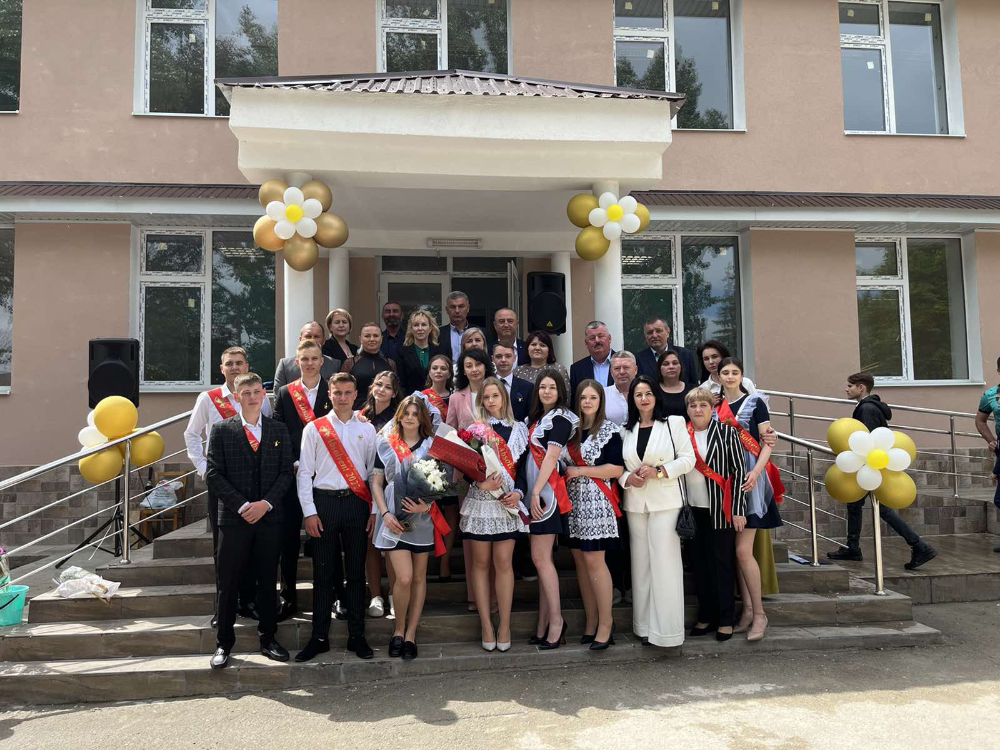
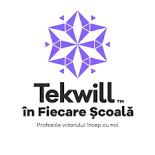
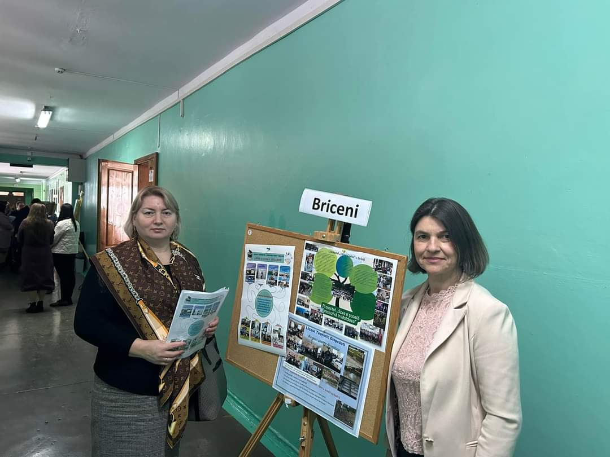
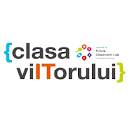
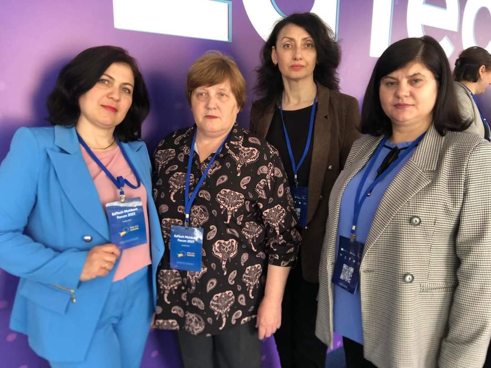

Noutăți
Ultimul sunet
30/05/2023 Vă invităm la ultimul sunet ediția 2023. Sunt așteptați cu drag părinții elevilor, îndeosebi părinții absolvenților. Administrația vă dorește o vacanță frumoasă și liniștită, iar elevilor din clasele XII-a și IX-a - succese la examene!
Tekwil in fiecare scoala
16/05/2023 Proiectul ,,Tekwill în fiecare școală” își propune dezvoltarea abilităților și competențelor digitale ale elevilor în cadrul disciplinelor opționale: Proiectarea și dezvoltarea WEB- clasa a VIII-a ,,B”, Design Grafic clasa a IX-a ,,A”, Proiectarea și Dezvoltarea aplicațiilor Mobile clasa a XI-a U ,,B”, Inteligența Artificială clasa a XI-a U ,,A”, Antreprenoriat clasa a X-a Real.
Proiectul incluziune
15/05/2023 Indexul pentru incluziune: dezvoltarea procesului de participare în școli constituie un set de materiale de suport pentru autoevaluarea tuturor aspectelor școlii-inclusiv a activităților de pe terenurile de joacă, din cancelarii și din sălile de clasă-precum și din comunitățile și mediul din jurul școlii. Indexul încurajează personalul școlii, părinții/îngrijitorii și copiii să contribuie la un plan de dezvoltare incluzivă și să-l pună în practică.
Clasa viitorului
16/05/2023 ,,Clasa Viitorului” oferă elevilor din liceu o sală de clasă dotată cu echipamente tablă interactivă, ochelari 3D, microscoape electronice, dronă și mobilier accesibil pentru grupuri de lucru, specific acestei clase, cadrele didactice, membre ale echipei de proiect beneficiind de formări în vederea utilizării eficiente a echipamentelor.
Școala digitală
16/05/2023 Inițiativa ,,Școala digitală” prin programul său complex de transformare digitală oferă posibilitatea instituției Liceul Teoretic ,,Grigore Vieru” or. Briceni, alături de alte 24 de școli din țară, beneficiare, să elaboreze o strategie dedicată, susținută de un plan de acțiune calificat în monitorizarea implementării.